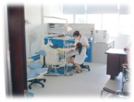

珠海同和医院口腔治疗中心
珠海同和医院口腔治疗中心——同步齿科是西安交通大学口腔医院临床教学合作单位。拥有国内一
流齿科医生、先进设备以及优雅环境和星级般服务让人们在口腔健康、牙齿治疗、牙列矫正、种植修
复和牙齿美白上与世界接轨,与时代同步。
同步齿科业务涉及以下4方面。
美白牙
同步齿科牙齿美白技术能够在30分钟内，瓦解牙齿内部的深层色素，在本质上改变牙齿的颜色，而又不损伤牙齿的健康.四环素牙、氟斑牙、变色牙、遗传性黄牙的美容美白等。
正畸美容
OPA-K正畸技术更适合东方少年的正畸
陶瓷隐形矫治器隐形矫治过程更美观
亚力山大正畸系统5天重塑健康靓齿
MBT滑动直丝弓正畸技术多重功效集于一身正畸体系。
烧瓷牙
钛合金瓷牙、黄金瓷牙、全瓷牙、活动牙、全口假牙、精密附着体、隐形义齿等。根据每一位客人的的自身条件和进行选择达到个性化美齿的效果。
口腔全科
作为斗门区口腔全面体检机构，为中小学生及企事业人员进行口腔体检。凡前来我院口腔检查可享受免费口腔检查咨询服务
